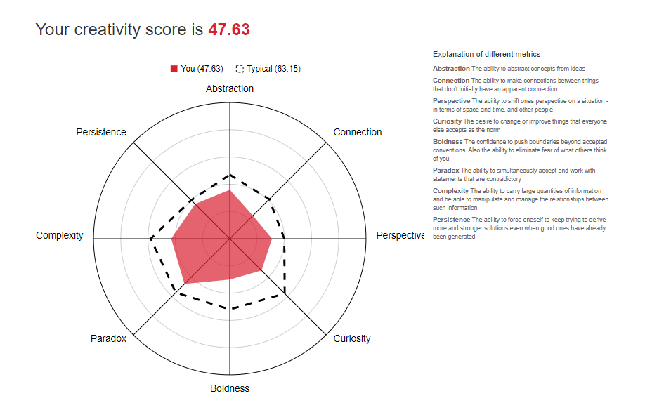

My Interest in IT
What is your interest in IT?
I am interested in IT because I believe that it is an important subject to grasp moving into the future due to speed with which technology is influencing our work and private lives. With the ultimate goal of becoming a financial planner or an investment analyst, I will be required to rely heavily on IT when it comes to following the financial markets, compiling customers financial plans or providing investment recommendations, providing updates to clients and managing a business. On a more personal note I am excited by the prospects that AR, VR, robotics and AI offer to the future in the way we conduct business and are entertained.
When did your interest in IT start?
I have had an interest in IT since a young age. While not being involved with in-depth computer building or programming, I have always managed to understand the basics enough to get me by, from downloading and installing games, creating spreadsheets, regular use of excel and Microsoft word and occasionally PowerPoint.
Was there a particular event or person that sparked your interest?
I can still remember when my Dad bought home our first family computer, I remember boasting to my friends at school that it was black (wow) as I had never seen a black computer before, it seems not everyone was as impressed as I was. It had a CD drive and I was amazed at the 3D graphics (obviously very poor by today’s standards, but at the time were very good) that were demonstrated in a game that was included with the computer. From that point I owned numerous PC games that I would play by myself or with friends.
My first encounter with AR technology was a couple of years ago when I purchased a box of cereal that had a “Zapcode” on the packet. A Zapcode being a form of QR code or barcode able to be scanned by a smart phone using the “Zappar” app. I was intrigued by this and subsequently downloaded the app to find out more. Once I scanned the Zapcode with the app, the picture of a door opened up on the box, in the area where the Zapcode was, and a small video of bugs bunny started playing, seemingly right on the side of the box and could be viewed from any angle as long as the Zapcode remained completely uncovered. I was intrigued by the technology and was surprised to find at the time that it wasn’t more popular.
Please see below my example of Marker-Based Augmented Technology. Technology made possible by Zappar.
Outline your IT experience
With my current career in the defence force I have seen numerous changes over my last 15 years of employment. Computers have gotten quicker, more mobile, more readily available and more relied upon. So too have smart phone-based messaging/ video services been incorporated into daily life through the need to be contactable 24/7. For the last 20 years (more than half of my life) I have owned, and used daily, a PC and mobile phone of some form. The multitude of PC’s, laptops, Wifi routers, Gaming systems, Wifi dongles, tablets, smart watches and Bluetooth items that have formed part of our lives are constantly relied upon, and are noticed and cursed when they fail to operate to our expectations.
Why did you choose to come to RMIT?
I studied my last subject (Financial Markets) through RMIT and found the course work and lecturers to be of a high standard and I was able to receive assistance during a difficult time during the subject. The Learning Management System is easy to use and I have found the weekly tutorials/ lectures to be relevant and dependable.
What do you expect to learn during your studies?
I expect that I will gain both a broader and in-depth understanding of IT in of itself and the ways in which we can harness the benefits of IT in the workplace, while also being made aware of its downfalls and how to manage/ avoid them.
My Ideal Job
Below is a hyperlink to my ideal job
My Ideal JobAlternatively, if the link has expired, here is a screenshot

Provide a description of the position, and particularly what makes this position appealing to you.
The position is for an investment analyst through an accounting and finance firm. The position will entail conducting research on assorted investment options, conducting analysis on selected investment options in order to fulfil a certain investment criteria, compiling and presenting a presentation to the firms’ management in order to promote the investment and assisting with the implementation and review of investments.
The position appeals to me as I have had a long-term interest in investments and it give me the opportunity to work in a field I would enjoy.
A description (in your own words) of the skills, qualifications and experience required for the position
Ideally, I will have had previous experience in a chartered firm or investment banking environment. While not specified, it would be expected that I would be tertiary qualified. Communication and interpersonal skills are also a must in order to be able to “sell” the investment options to management. I also need to be able to work as a team while also needing to possess the ability to conduct my own work.
A description (in your own words) of the skills, qualifications and experience you currently have.
While I am currently working on becoming tertiary qualified, I feel that I am currently quite able to work as a small team and also by myself as is required of my current employment. I feel that my interpersonal skills and communication are quite good, however there is always room for improvement.
A plan describing how you will obtain the skills, qualifications and experience required for the position, building on those you have now.
I will seek out opportunities in my current career to work on my communication, interpersonal skills and team work in order to ensure I have laid the foundations for my future employment.
I will continue studying until I have gained my Bachelor of business, and will then seek out a graduate position in either a financial planning firm or an investment management company to gain the experience I require for the Investment Analyst position.
Test Results
Myers-Briggs Personality test result
Your type is ISTJ
As an ISTJ, you tend to be reserved, orderly, and practical. You are likely self-sufficient, hardworking to meet obligations, and prefer to be alone or in small groups of close friends (Crystal 2020).
Learning Styles test result
Kinesthetic 38%, Visual 34%, Auditory 28%
Kinesthetic is your primary learning style. Kinesthetic style is learning by doing. You learn in this manner whenever you capture new information through the process of physical activity. It is often referred to as a hands-on learning experience (Personality Max 2020).
Creativity test result
Your creativity score is 47.63, Typical is 63.15 (Aulive n.d)
What do the results of these tests mean for you?
In regards to the Myers-Briggs Personality test results I agree with a type of ISTJ, I am normally reserved, orderly, practical and self-sufficient. In most cases it is also true that I prefer to work alone or in a small team.
In regards to the learning styles test result I would also agree that I am a kinesthetic learner and I like to learn by doing. Whenever I am asked to do something I usually like to be shown how, I gain very little from a text-based explanation of a theory and would prefer a diagram or a model. I also find I can’t sit for too long and require some form of physical activity to keep me awake and focused. I enjoy adventuring in the outdoors; however, I am also fond of reading.
In regards to the creativity test, Although a free 5 minute online creativity test may not be entirely accurate, I should in any case be mindful of the result and if I feel that my creativity is lacking I should work to exercise the creative portion of my brain, this could be in the form of sketching items, building Lego creations with my kids or trying my hand at learning a musical instrument.
How do you think these results may influence your behaviour in a team?
I should work to speak up when working in a team and also volunteer to be the team leader at times, however it helps being reserved in that I am able to sit back and find out the ideas of my other team members. With my below average creativity score I will be required to utilise the creative skills of those with whom I work.
How should you take this into account when forming a team?
When forming a team I should aim for the greatest spread of skills and experience possible in order to maximise the teams capability.
Project
Overview
I want to design a board game that utilises Augmented Reality (AR) technology. The game will require players to co-operate or compete, depending on the game mode chosen, in an attempt to move their AR character around the board using real world obstacles. All players will be able to view the action on an AR compatible device, sitting on a stand near the gameboard, filming through the devices’ front-facing camera.
The game will be child friendly, from ages 6 up and will make use of a game board, player pieces, die and construction pieces. The game will require a minimum of one AR compatible device for example a smart phone, tablet or computer.
Motivation
The motivation behind this project is the desire to combine the social aspect of board games with the technology of today’s video games.
There are currently more than 2.5b video gamers in the world and they were estimated to have spent $152.1b on games in 2019, with mobile gaming representing 45% of the market in 2019 (Wijman T 2019).
Video games allow players to immerse themselves into any number of situations/ universes/ environments only limited by the imagination of game developers. Although video gaming is immensely popular, it can also at times be an anti-social activity limited to one or two players, although there is growth in the industry where more people in the same room are able to play simultaneously.
While the growth of online gaming is growing steadily, board games are still a very popular past time with PR Newswire (2019) predicting yearly sales will be worth US $21.56b by 2025.
With basic forms of board games having been around for many generations, they give the opportunity for families and friends to have fun, problem solve and compete together, attributes that video based games may not necessarily offer. Board games also have the added benefits of not breaking the budget and not requiring continuous updates.
What are you passionate about? As a father of 3 I find it important to take time out of our busy schedule and spend time quality time with my young family whether running around the backyard, helping with homework, reading books, playing Nintendo or simply watching a movie. We also try to spend time at least once a week playing board. Board games offer an opportunity for creativity, teamwork, imagination, concentration or simply just some laughs. Many of the games we play are timeless classics like Monopoly or Cluedo and are re-released to be child friendly with simpler instructions and shorter play time.
This love of sharing board games with my family combined with my excitement for AR/ VR technologies means I have an interest in the “virtually” untapped market for family friendly AR board games. With the growth of AR/ VR technologies, an opportunity exists for board games and electronic gaming to merge to create a new form of past time.
Description
There currently exist only a couple of AR board games on the market: ‘Tilt Five’ an AR tabletop game and an AR board game called ‘Hologrid: Monster Battle’.
Tilt Five is a mixed Card/Board game where players are required to traverse an open world environment battling monsters. The game requires players to wear AR goggles connected to phones and the set costs US$879 (Irving, M 2019).
HoloGrid: Monster Battle features monsters being summoned onto a field of battle through the use of cards on a chess-like game top. This game also requires players to wear AR goggles or watch the action through a mobile device and the game costs $15 (HappyGiant, LLC and Tippett Studio 2017)
Both of these titles involve battling monsters and there are currently no other AR board game to appeal to people who aren’t fans of that genre or young families with children wanting to play a game together.
The boardgame I am proposing will require players to take turns to roll real dice (or AR dice using hand gestures) to move their characters around the gameboard. The players will make use of actual objects either included in the game or readily found household items, for their characters to traverse certain areas of the board and solve problems. In co-operative mode, when players will work together to build the obstacle courses, the AR characters themselves will also be required to make use of team work to help each other over/ through obstacles.
For example, players A, B & C must move their characters from point A to point C on the game board, picking up player D from point B along the way, travelling over two rivers utilising 3 rulers and two matchboxes. The players will need to assemble the obstacle course within a certain time period to achieve the goal, once the timer has run out the AR characters will automatically begin to traverse the course, no matter how haphazardly built, and will either complete the goal if the course is built successfully or fall in the AR river and be swept away. As gameplay continues (if each level is successful and there are still surviving characters) the obstacle courses will become longer and less time will be allowed to build each. The last player or team left standing will be deemed the winner.
The action on the gameboard will be able to be viewed through either a single device, multiple linked devices or the action may be able to be cast from a device to a TV for everyone to be able to watch.
Age: The recommended player age from the game will be 6 and up.
Number of players: The recommended number of players will be two to six players, the main limiting factor being that if only one device is being used to view the game, the more players there are the less people will be able to see the screen.
Translatable: The game could easily to able to be translated to numerous languages.
Drawbacks/Obstacles: Ensuring that, unlike traditional boardgames which are timeless, the game is interesting enough to be played many times as opposed to many video games which lose their appeal once completed once or twice.
Tools and Technologies
The game will make use of Marker-based Augmented Reality, whereby the camera on a device such as a smart phone, tablet or computer, looks for identifiable “markers” on the board to understand which angle it is looking at the board from and overlays digital information as items on the screen (ThinkMobiles n.d ). In this instance, characters will walk/ run/ climb over and craw through obstacles placed on the game board, while trying to avoid falling into/off AR rivers/ pits/ cliffs etc.
The game will be developed utilising Unity’s “Core Platform” and will be compatible with Apple, Microsoft and Android phones.
If multiple devices are used to view the gameplay, they will be required to be linked through Wifi.
The proposed project is not without its challenges or limitations though. While marker-based technology requires the recognition of specific markers on objects included in the game, the challenge, and an opportunity for innovation will be, for the game app to recognize internationally standard sized objects such as a matchbox, tissue box, ruler, batteries, toilet roll etc. so that basic household objects are able to be used as obstacles. Similar technology is currently being used in many social media video chats which are able to recognise a persons’ facial features and overlay digital information like a cartoon face or bunny ears, so it’s not too much of a stretch for this technology to be possible.
Limitations- Customers will require a minimum of 1 AR compatible device and a Wifi connection to play the game. If available, more than one device will also be able to link into the game as well.
Another option to be considered if for the app to cast a live feed from the device to a TV through a device such as a Chromecast dongle for ease of viewing of the gameplay. At this stage this ability isn’t known to exist but is another example of technology that the project could realise.
Skills Required
- The project will require the proficient use of Unity’s “Core Platform” in order to write the app
- The skills of a graphics designer or cartoonist should also be employed to make the game visually appealing and the skills of a game developer could also be employed to increase the likelihood of the games’ success.
- The skills of a Mobile application developer would also likely be required to ensure multiple devices are able to be sync’d to the same game or for the footage to be cast to a tv if required.
Today there are a large range of programs that allow anyone with access to the internet to download a program and start creating their own apps, this ability increase the likelihood that the project would be feasible.
Outcome
If the game is successful, there will exist an opportunity for a new genre of hands-on interactive gaming. AR and VR technologies hold a lot of potential in areas like real estate, marketing, scientific research, education, entertainment and many more currently unforeseeable applications and with the success of the game more companies will invest time and money into the technology, increasing the possible applications of AR, specifically marker-based AR.
If proven to be successful, the game could potentially be sold to a company like Lego who will be able to develop a similar game utilising Lego characters and Lego pieces or alternatively to a company like Universal Pictures who could make a version of the game whose characters are “Minions”.
Reference List
Aulive n.d, ‘Creativity Test Result’, Aulive, viewed 27 February, http://www.testmycreativity.com
Crystal 2020, ‘Myers-Briggs Personality Test Result’, Crystal Knows, viewed 27 February, https://www.crystalknows.com/myers-briggs-test
HappyGiant, LLC and Tippett Studio 2017, HoloGrid: Monster Battle, viewed 20 March, http://www.hologridmonsterbattle.com
HTML5 Up n.d, Hyperspace HTML5 Template, HTML5UP, accessed 22 March, https://html5up.net/hyperspace
Irving, M 2019, ‘AR system brings holographic board games to the table’, New Atlas, 1 October, viewed 19 March 2020, https://newatlas.com/games/tilt-five-augmented-reality-tabletop-gaming-system
Personality Max 2020, ‘Damian’s Personality Max Report’, Personality Max, viewed 27 February, https://personalitymax.com/report/?ls=69-59-77&name_key=25c6b8589a
PR Newswire 2019, ‘Playing Cards & Board Games Market Size Worth $21.56 Billion by 2025: Grand View Research, Inc’, Bloomberg, 9 October, viewed 18 March, https://www.bloomberg.com/press-releases/2019-10-09/playing-cards-board-games-market-size-worth-21-56-billion-by-2025-grand-view-research-inc
Seek 2020, ‘Investment Analyst’, Seek, 24 February, viewed 8 March, https://www.seek.com.au/job/41026768?type=standard#searchRequestToken=dbdd3839-2efe-42d0-b29d-fc8fd80b3626
Self-Recorded example of Zappar AR Technology 2020, Zappar, recorded 22 March, www.zappar.com
ThinkMobiles n.d, What is Augmented Reality (AR) and How does it work?, ThinkMobiles, viewed 17 March, https://thinkmobiles.com/blog/what-is-augmented-reality
Wijman, T 2019, ‘The Global Games Market Will Generate $152.1 Billion in 2019 as the U.S. Overtakes China as the Biggest Market’, New Zoo, 18 June, viewed 20 March, https://newzoo.com/insights/articles/the-global-games-market-will-generate-152-1-billion-in-2019-as-the-u-s-overtakes-china-as-the-biggest-market